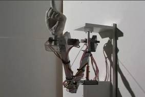
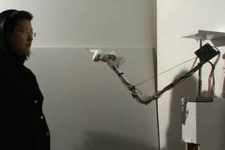
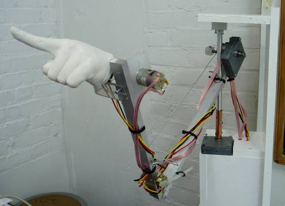

2006 May, Interactive Sculpture
Still Image
Museum Documentation
 

Documentation
My piece Pointing at Me involves a rotating plaster hand atop a metal pedestal. As the viewer approaches, the index finger begins to point directly at him as the other fingers fold down. In any culture, pointing one's index finger is incredibly rude and an indication that that person is singling out and ostracizing another person. By being pointed at, the viewer becomes the protagonist in the piece; he suddenly becomes implicated. His first concern is not directed toward how the finger has moved from an open-handed position to a pointing position but rather what he feels at the present moment. (In this case, three motors and two sensors are connected to the plaster hand via the metal pedestal and they control the hand's movement.) In my work, especially Pointing at Me , technology becomes a catalyst that immerses viewers into the works while helping to convey the situation of being constantly on display as I had experienced daily as an immigrant.